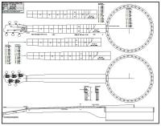

Select your area of interest:
Home* Lap Steel* 3 String Guitar* "Regular" Guitar* Violin* Bass*Banjo* Mandolin* Ukulele* Home Recording* Links
Traditional & Progressive Open Back Banjo Design & Construction Information
Boucher Early Minstrel Banjo (construction guide on CD & full size plan available)Frank Profitt Mountain Banjo
Bluestem Mountain Banjo Nouveau
Bluestem Artisan Mountain Banjo
Bluestem Open Back Banjo Nouveau
Bluestem Wine Box / Hand Drum Banjo
Open Back Banjo Design Primer
General Banjo Construction Information
Open Back Banjo Setup Guide
“Why can’t I get this thing to play in tune?” (more than you wanted to know about equal temperament)
Bluestem Open Back Banjo (construction guide on CD & full size plan available)
Bluestem Workingpersons 11 Slot Head Open Back Banjo (construction guide on CD & full size plan available)
Bluestem Wood Top Banjo Information (full size plan available)
Bluestem Backstep Banjo; looking back and moving forward...
****************************************
Bluestem Open Back Banjo Nouveau

Bluestem Open Back Banjo Nouveau features:
- Raw brass tension band held by polished stainless steel retaining brackets hold Remo Renaissance head
- Internal tensioning system exerts upward pressure on brass tone ring to provide head tension
- High ratio right angle tuners for smooth and stable tuning
- Tunneled fifth string for comfort
- 23" A scale 17 fret scooped fretboard with mother of pearl position markers (alternate scale lengths shown)
- Block rim for stability and strength
- Polished stainless steel tailpiece holds standard loop end banjo strings
- Single 1/4" Acorn nut draws rim and neck together through a channeled dowel stick and specialty barrel nut embedded in the neck heel
Click HERE for OPEN BACK BANJO PLAN in PDF format.

The original prototype shown above as well as variations are shown on the plan. The basic dimensions outlined on the plan can be used to build a 5 string open back banjo loosely based on the prototype design. Alternate scale length fretboards and fret placement charts are shown for 22-1/2", 23-1/2", 24-1/2", and 25-1/2" scale instruments. Several traditional peghead designs are also shown so you can modify the neck shape and add a standard 5th string tuner if you wish to build a more conventional banjo from the plan. That's a lotta info in one place!
*****************************************
My take on open back design (IMHO, YMMV.)
The open back banjo is a unique instrument that has remained basically unchanged from designs that had reached the pinnacle in development in the later portion of the 19th century. Part of the reason the instrument did not evolve beyond these designs was due to lack of a good alternative head material which would increase stability and encourage alternate pot designs. The 5 string banjo did undergo major design changes when jazz and bluegrass demanded an increase in volume from the instruments. This resulted in the modern resonator banjo of today with massive tone rings mated to high tension synthetic head materials. The open back was relegated to the poor cousin status, and players of open backs were forced to be content with the existing designs.Development of new open back designs was also impeded by reluctance of many players to consider anything other than “traditional” instruments, even if that meant putting up with uncomfortable designs and slipping planetary pegs.
Some of the progressive designs presented by the new crop of open back banjo builders are meeting with wider acceptance by today's players. Information sharing by way of the internet and other sources has been in no small part responsible for the change in attitudes and willingness of players to try new designs. We are truly in a renaissance of instrument construction as both knowledge and new material choices have become more readily available.
Having several traditional open back banjos under my belt I worked to purposefully go in a different direction with this internally tensioned design using a standard Remo Renaissance head and high ratio right angle tuners. This banjo came about as a result of reviewing all of the areas about traditional designs that I felt could be improved upon; those areas being comfort, playability, stability, and cost. That’s a lot to tackle, but after much deliberation I felt that I’d made improvements in all of those areas. It is not a design for traditionalists, but it just may become your favorite player if given a chance.
Notes regarding this particular banjo design
The following information is meant to give you a quick overview of this particular instrument and how it differs from what you'll usually see being played. The traditionally designed banjo is uncomfortable to hold, has a neck design that restricts free hand movement, and utilizes tuners that are expensive and prone to string slippage, and many pieces of individual hardware to loosen. This version of the five string open back banjo resulted from an attempt to address and change the areas of the traditional design that I felt were problematic.Peghead design:
Three and two tuner layout allows the fifth string tuner to be relocated to the peghead which eliminates the exaggerated neck and fingerboard asymmetry resultant of the 5th string tuner location at the 5th fret. This improves overall playability and prevents the fifth string tuner from interfering with left hand positioning. The tuner positions quickly become second nature, with no long reach for the fifth string tuner.
Tuners:
Traditional banjo tuners have one thing in their favor... tradition. They are more prone to slipping due to their 4:1 ratio and often need frequent adjustment of their button screws to hold the string tension. Many early banjos were fitted with peg-style friction tuners that were fine for the lower tension that gut strings imposed on them, but with the advent of steel strings designers determined early on that a gear reduction peg would be necessary to tune easily and hold the string tension reliably. Somewhere along the line the banjo froze in this natural evolutionary process. My supposition is that 4:1 ratio tuners were considered good enough for use with the strings, head materials, and tensioning designs that were in common use.
Modern banjo steel string tension is certainly lower than that of the guitar, but an argument for the use of wider ratio tuning machines can certainly be made considering the higher pitches and shorter scales that are commonly used today, especially in old time music. Additionally, quality banjo tuners are several times the cost of good guitar-style machines and contribute significantly to a instrument's bottom line. The geared Ukulele tuners were chosen as an alternative because they are attractive, low cost, and work well.
Neck:
The fifth string hump of the traditional neck has been eliminated for reason of comfort and improved playability by relocating the fifth string tuner to the headstock and housing the string in a small diameter stainless steel tube up to its exit position between the 4th and 5th frets.
Pot assembly:
The pot assembly also departs radically from the standard traditional design. The protruding hardware has been eliminated by using a design that harkens back to a 1866 William Tilton design. It incorporates an internal tensioning system which works opposite to that of conventional designs. Rather than pulling the tension band down over a stationary tone ring, this design holds the outer edge of the head in a fixed position and raises the tone ring to tension the head. The net effect of this is to produce a pot that has no uncomfortable external hardware, but is easily adjusted by socket head set screws which are accessible from the rear face of the rim.
Tailpiece:
The nonadjustable tailpiece is formed from stainless steel and features a rear comb for quick attachment of standard loop end banjo strings. The tailpiece front has a simple design which incorporates holes that the strings are passed through to slightly increase the downward force on the bridge.